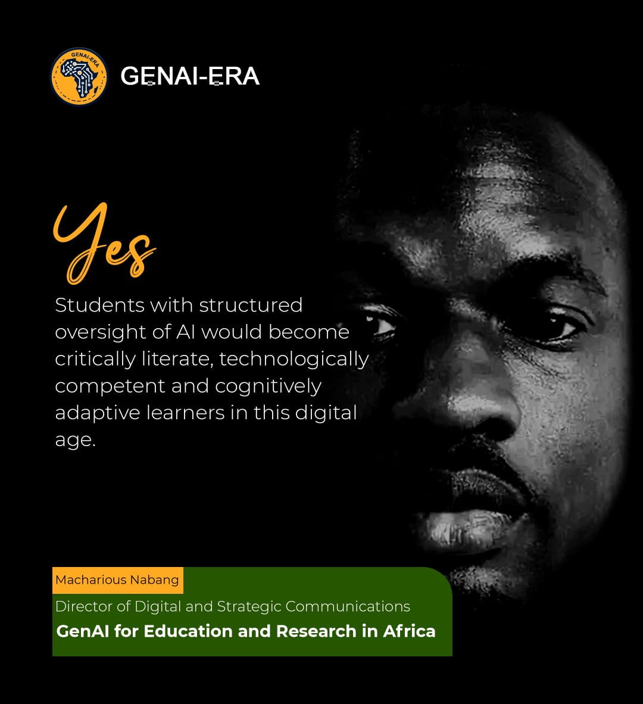
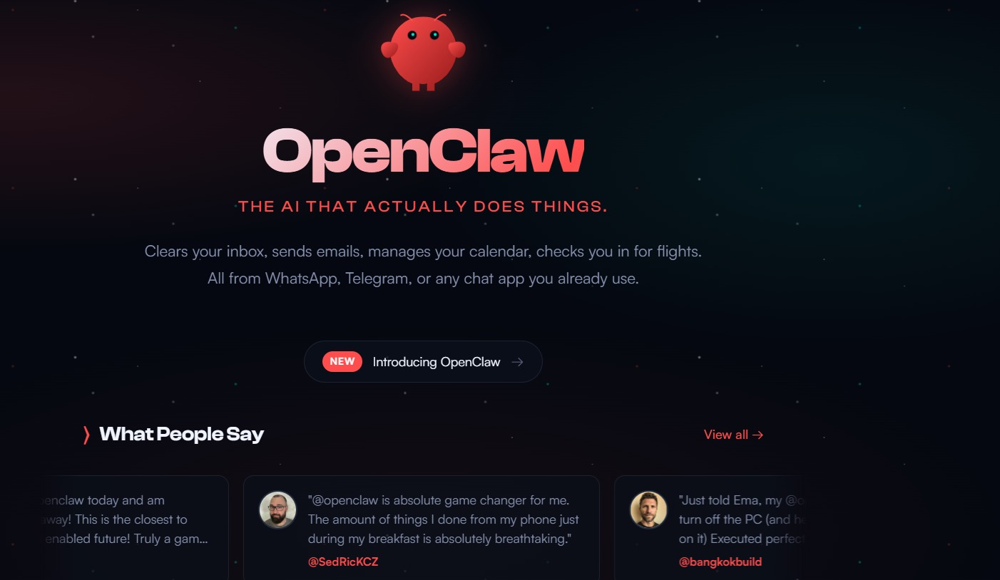
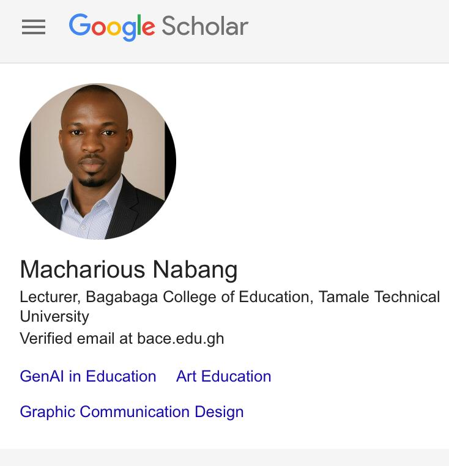
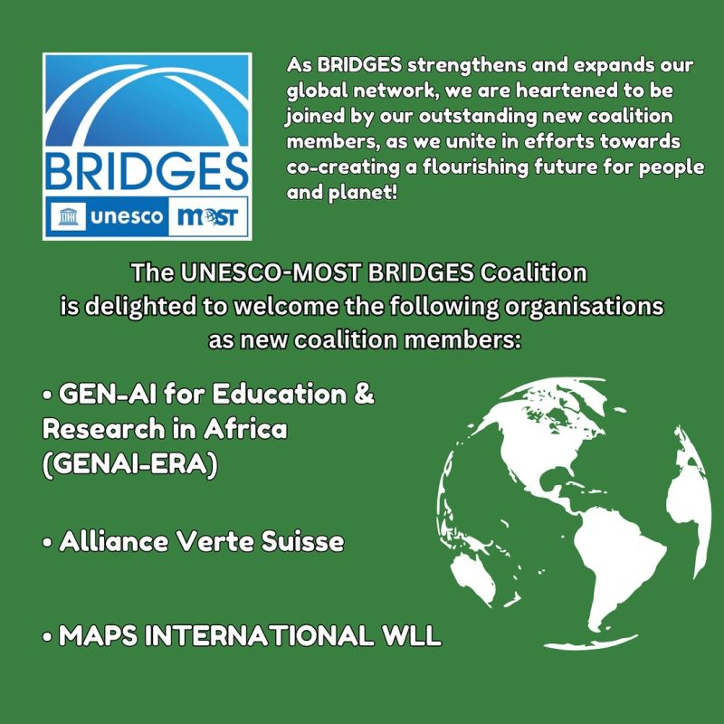
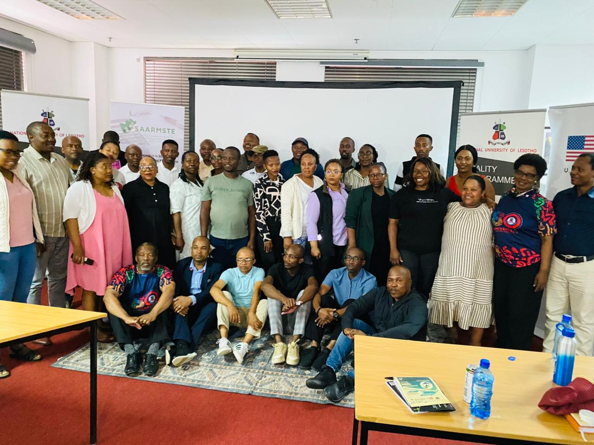

Leadership recognition, community impact, and stories from across GenAI‑ERA. Bookmark this page for updates and future blog posts.
Honoring leaders whose dedication has accelerated GenAI literacy initiatives, forged new partnerships, and inspired educators across regions.

AI is no longer a future prospect in education — it is a daily reality. Students encounter it through intelligent search tools, writing assistants, and adaptive platforms. The critical question is not whether students will use AI, but how they should.
Prohibition alone is not the answer. What students need is structured academic oversight that builds technological literacy, critical thinking, and intellectual integrity — skills essential for knowledge societies of the future.
By Macharious Nabang, Director of Digital & Strategic Communications, GenAI‑ERA

MoltBot (OpenClaw) is a locally run AI assistant that automates everyday digital tasks for educators — from managing emails and scheduling meetings to organizing files and sending reminders across platforms like WhatsApp, Telegram, and Slack.
While powerful, MoltBot requires careful configuration to protect sensitive student data, prevent unintended automated actions, and maintain professional judgment in academic decision-making.
By ..MN, GenAI‑ERA Executive

In today’s scholarly environment, visibility and impact are as important as publication itself. A Google Scholar profile makes an academic’s work more discoverable, trackable, and visible to colleagues, students, and institutions around the world.
It also offers simple but powerful citation metrics like the h-index and i10-index, helping educators and researchers understand how their work is being used, cited, and recognised across the global academic community.
By Macharious Nabang, GENAI‑ERA Executive
North-West University (NWU) has made history as the first South African institution to adopt an official, comprehensive AI policy approved by the University Council. Spearheaded by Prof. Anné Verhoef and the NWU AI Hub, the policy creates a centralized governance model that locates AI oversight within the IT department while utilizing a multi-stakeholder AI Steering Committee.
The framework proactively addresses rapid technological shifts by remaining flexible, covering teaching, research, and postgraduate supervision. Crucially, it moves beyond technicalities to include "Human-Centric" ethics and environmental sustainability, specifically targeting the ecological impact of AI's energy and water consumption.
Source: Jacobs, B. (2026, January 15). NWU becomes first South African university with official AI policy. North-West University News. https://news.nwu.ac.za/nwu-becomes-first-south-african-university-official-ai-policy

We are excited to announce that GenAI‑ERA has been officially welcomed as a coalition member of UNESCO‑MOST BRIDGES. This recognition strengthens our mission to advance responsible, culturally grounded, and globally connected AI for education and research.
As we enter a new chapter, we encourage all members and supporters to engage more actively, contribute ideas, collaborate across cultures, and embrace the learning and networking opportunities ahead. Together, we will continue building a vibrant and inclusive community that uplifts Africa and contributes meaningfully to global AI conversations.
Stay connected with us:
Please share these opportunities widely so we can grow this community together.
GenAI‑ERA: Building responsible AI across cultures, continents, and communities.

On Nov 8, 2025, Mr. Matthew Nyaaba spoke at the SAARMSTE Lesotho Chapter conference on AI in education. He explored global trends, low adoption in Africa, and strategies for ethical, culturally responsive AI use, inspiring educators to become active AI co-creators.
We are proud to celebrate Dr. Benjamin Quarshie, the Assistant Research & Grants Director of GenAI‑ERA, for emerging as the 2nd Runner‑Up for College Lecturer in the Ghana Teacher Prize 2025! Your dedication to teaching, research, and service continues to inspire our community and advance the mission of GenAI‑ERA. We are truly proud of you, Dr. Benjamin Quarshie.
As we wait to unveil our newly appointed executive members, we are eager to join the Northern Cape Department of Education, South Africa, in officially announcing and celebrating the appointment of Mrs. Vanessa Willemse as GenAI‑ERA's Director of International Relations.
The entire GenAI‑ERA community proudly congratulates you on your well‑deserved appointment as Head of the Department for Mathematics Education & ICT at St. Joseph's College of Education.
This achievement is a testament to your dedication, leadership, and unwavering commitment to excellence in mathematics education. We are truly proud of you, Dr. Kyeremeh, and we have no doubt that you will continue to inspire both your colleagues and students in this new role.